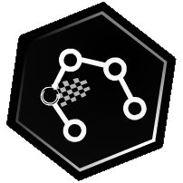

Interface CheckPoints
public interface CheckPoints
 CHECKPOINT FUNCTIONS
This module gathers all the checkpoint information (position, charging ability) but also some information for beginners like the next checkpoint position or the first charging checkpoint position.
This module gathers all the checkpoint information (position, charging ability) but also some information for beginners like the next checkpoint position or the first charging checkpoint position.
- Author:
- Romuald GRIGNON
-
Method Summary
Modifier and Type Method Description floatgetCheckPointX(int checkPointIndex)Gets the X-axis position of a specific checkpoint (Code Level #--).
The index of the specific checkpoint is given in parameter.floatgetCheckPointY(int checkPointIndex)Gets the Y-axis position of a specific checkpoint (Code Level #--).
The index of the specific checkpoint is given in parameter.intgetFirstChargingCheckPointIndex()Search through all the checkpoints and return the index of the first one that has the charge ability (Code Level #6).floatgetFirstChargingCheckPointX()Search through all the checkpoints and return the X-axis position of the first one that has the charge ability (Code Level #4).floatgetFirstChargingCheckPointY()Search through all the checkpoints and return the Y-axis position of the first one that has the charge ability (Code Level #4).floatgetNextCheckPointX()Gets the X position of the next checkpoint (Code Level #4).floatgetNextCheckPointY()Gets the Y-axis position of the next checkpoint (Code Level #4).booleanisCheckPointCharging(int checkPointIndex)Gets information about the charging ability of a specific checkpoint (Code Level #--).
The index of the specific checkpoint is given in parameter.
-
Method Details
-
getCheckPointX
float getCheckPointX(int checkPointIndex)Gets the X-axis position of a specific checkpoint (Code Level #--).
The index of the specific checkpoint is given in parameter.- Parameters:
checkPointIndex- integer value for the checkpoint index (from 0 to N-1 (both included), with N the number of checkpoints returned byGlobal.getNbRaceCheckPoints()).- Returns:
- a floating value for X-axis position of the requested checkpoint.
-
getCheckPointY
float getCheckPointY(int checkPointIndex)Gets the Y-axis position of a specific checkpoint (Code Level #--).
The index of the specific checkpoint is given in parameter.- Parameters:
checkPointIndex- integer value for the checkpoint index (from 0 to N-1 (both included), with N the number of checkpoints returned byGlobal.getNbRaceCheckPoints()).- Returns:
- a floating value for Y-axis position of the requested checkpoint.
-
isCheckPointCharging
boolean isCheckPointCharging(int checkPointIndex)Gets information about the charging ability of a specific checkpoint (Code Level #--).
The index of the specific checkpoint is given in parameter. The related checkpoint will be displayed on the screen with an electric icon .- Parameters:
checkPointIndex- integer value for the checkpoint index (from 0 to N-1 (both included), with N the number of checkpoints returned byGlobal.getNbRaceCheckPoints()).- Returns:
- a boolean value to indicate if the requested checkpoint is a charge area (true) or not (false).
-
getNextCheckPointX
float getNextCheckPointX()Gets the X position of the next checkpoint (Code Level #4).- Returns:
- a floating value for the X-axis position.
-
getNextCheckPointY
float getNextCheckPointY()Gets the Y-axis position of the next checkpoint (Code Level #4).- Returns:
- a floating value for the Y-axis position.
-
getFirstChargingCheckPointIndex
int getFirstChargingCheckPointIndex()Search through all the checkpoints and return the index of the first one that has the charge ability (Code Level #6).- Returns:
- an integer value for the found charging checkpoint index (from 0 to N-1 (both included), with N the number of checkpoints returned by
Global.getNbRaceCheckPoints())
-
getFirstChargingCheckPointX
float getFirstChargingCheckPointX()Search through all the checkpoints and return the X-axis position of the first one that has the charge ability (Code Level #4).- Returns:
- a floating value for the found charging checkpoint X-axis position.
-
getFirstChargingCheckPointY
float getFirstChargingCheckPointY()Search through all the checkpoints and return the Y-axis position of the first one that has the charge ability (Code Level #4).- Returns:
- a floating value for the found charging checkpoint Y-axis position.
-